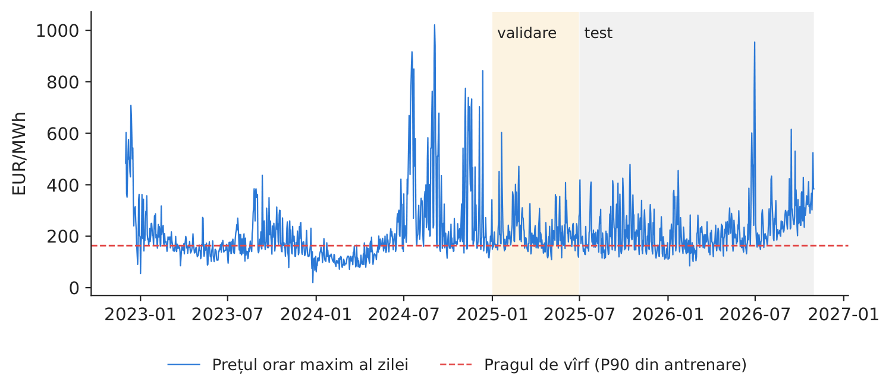
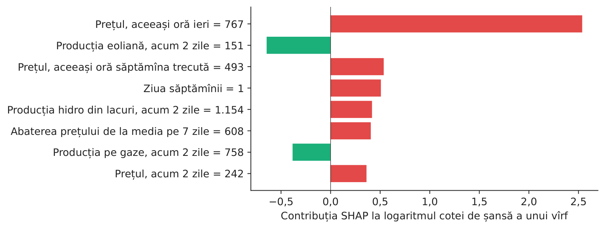
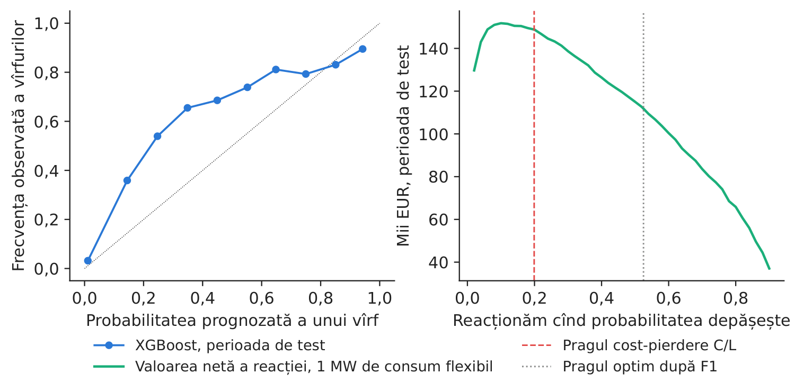
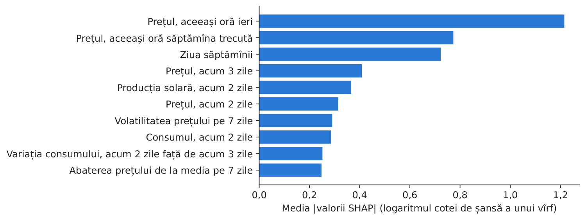

Studiul de caz 7 · Cursul 7
Un sistem explicabil de avertizare timpurie pentru vîrfurile de preț
Prof. dr. Daniel Traian PELE
Academia de Studii Economice din București, Departamentul de Statistică și Econometrie
Academia Română, Institutul de Prognoză Economică
Lucrarea de referință
Andrei, A.-V., Pele, D.-T., Cramer, A.-A., Amza, A. și Diaconu, D. (2026). Explainable AI-based early warning system for electricity price spikes: Evidence from the Romanian market. Proceedings of the International Conference on Business Excellence, 20(1), 4820–4836. doi:10.2478/picbe-2026-0352
Problema decizională
Un mare consumator industrial din România (o oțelărie sau o fabrică de ciment) își poate muta o parte din consum dintr-o anumită oră în alta dacă este avertizat cu o zi înainte asupra unui vîrf de preț; un furnizor își poate acoperi riscul sau poate apela la răspunsul cererii; un operator de baterii poate păstra energia stocată pentru seară. Toți își pun în fiecare dimineață aceeași întrebare, înainte de închiderea, la prînz, a licitației pentru ziua următoare: va avea ziua de mîine un vîrf de preț, în ce ore și de ce? Directorul de achiziții de energie trebuie să decidă cînd să reacționeze la o alertă — reacția are un cost (producție pierdută, prima unei acoperiri), dar lipsa de reacție într-un vîrf de preț costă mai mult. Iar consiliul de administrație dorește să știe de ce modelul emite alerta, înainte de a-i acorda încredere.
Lucrarea de referință
Întrebarea de cercetare. Poate inteligența artificială explicabilă (XAI, explainable artificial intelligence) să identifice factorii vîrfurilor de preț de pe piața pentru ziua următoare din România? Este prognoza consumului rezidual una dintre principalele variabile explicative? Se poate construi un sistem operațional de avertizare timpurie pe baza unor indicatori de echilibru ușor de interpretat (p. 4821)?
Datele. 5.000 de ore consecutive de pe piața pentru ziua următoare administrată de OPCOM (operatorul pieței de energie electrică și de gaze naturale din România), martie–septembrie 2024; producția, consumul și prognozele ENTSO-E (Rețeaua europeană a operatorilor de transport și de sistem pentru energie electrică) pentru ziua următoare, prețurile petrolului, gazelor naturale și certificatelor de emisii de CO\(_2\), temperaturile din 10 orașe; 70 de variabile; eșantion împărțit cronologic în proporția 80/10/10 (p. 4824–4826).
Metoda. Prognoze realizate cu Random Forest (păduri aleatoare) și XGBoost (eXtreme Gradient Boosting, arbori de decizie construiți secvențial), explicate cu metodele SHAP (SHapley Additive exPlanations) și LIME (Local Interpretable Model-agnostic Explanations); un scor de avertizare care combină praguri stabilite pentru nouă indicatori, ponderați cu scorul F1 obținut pe eșantionul de validare, cu un prag de alertă \(W^*=0{,}477\) ales tot pe eșantionul de validare; un eveniment de preț ridicat este definit ca un preț peste percentila 90, adică peste 149,99 EUR/MWh (p. 4827, 4832).
Principalele rezultate ale lucrării.
- Pe eșantionul de test, XGBoost explică 67,6 % din varianța prețului (\(R^2 = 0{,}676\), MAE, eroarea absolută medie 24,58 EUR/MWh) (p. 4828, Tabelul 3); validarea încrucișată pentru serii de timp, cu cinci subeșantioane, aduce informații despre regimuri: \(R^2\) mediu este 0,542, iar pentru subeșantionul care cuprinde valul de căldură din iunie–iulie valoarea este 0,357 (Tabelul 4).
- Variabilele cu cea mai mare influență sînt prețul din ora anterioară (media \(|\)SHAP\(|\) = 14,30) și prognoza consumului rezidual (10,13) (Tabelul 5, p. 4830).
- Pe eșantionul de test, sistemul de avertizare obține o precizie de 0,470, o sensibilitate de 0,722 și un scor F1 de 0,569 (Tabelul 7, p. 4832); indicatorul consumului rezidual, luat singur, are un scor F1 de 0,792 pe eșantionul de validare (Tabelul 8). Lucrarea raportează și un scor F1 de 0,800 pe eșantionul de validare și arată frecvența vîrfurilor în cele două perioade (24,0 % în validare, 10,8 % în test) (p. 4833).
- Ratarea unui vîrf costă mult mai mult decît o alarmă falsă, de aceea sistemul acordă prioritate sensibilității (p. 4832); semnalele de echilibru ușor de interpretat își păstrează valoarea ca indicatori de direcție și completează prognozele de preț (p. 4834).
Alte lucrări ale grupului nostru relevante pentru cursul 7: prognoze probabilistice ale prețului cu păduri aleatoare distribuționale (Andrei, Cepoi, Dumitrescu, Lessmann, Chiriac (Luchian), Pele și Petukhina, 2026, SSRN (Social Science Research Network) 6872381, doi:10.2139/ssrn.6872381; studiul de caz 6); modele fundamentale preantrenate, cu calibrare conformală, pentru prognoza riscului extrem pe piețele din Europa Centrală și de Est (Jheng, Tak, Găman, Mazurencu-Marinescu-Pele și Pele, 2026, ECECSR (Economic Computation and Economic Cybernetics Studies and Research) 60(2), 267–290, doi:10.24818/18423264/60.2.26.14).
Metoda, pas cu pas
Intuiția metodei
Vîrfurile de preț apar atunci cînd sistemul este sub presiune: cererea este mare, soarele a apus, vîntul este slab, iar prețul din ziua precedentă a fost deja ridicat. Un model de învățare automată deduce aceste combinații din datele istorice; metoda SHAP descompune apoi fiecare alertă în contribuțiile variabilelor de intrare, astfel încît managerul înțelege de ce a fost emisă. Scorul bazat pe indicatori este o variantă mai simplă și complet transparentă: o listă de semnale de avertizare, fiecare cu propriul prag.
Un vîrf în ora \(t\) este definit prin \(S_t=\mathbb 1\{p_t>\theta\}\), unde \(\theta\) este percentila 90 a prețurilor din eșantionul de antrenare. Consumul rezidual este \(RL_t=L_t-\mathit{Solar}_t-\mathit{Eolian}_t\) (ec. 1 din lucrare, cu prognoze pentru ziua următoare). Clasificatorul estimează \(\hat\pi_t=\Pr(S_t=1\mid\mathbf x_t)\) cu arbori construiți secvențial (\(\hat f(\mathbf x)=\sum_{k=1}^{K}f_k(\mathbf x)\), fiecare arbore \(f_k\) corectînd erorile celor anteriori). Metoda SHAP descompune fiecare prognoză într-o sumă de contribuții, \(\hat f(\mathbf x_t)=\phi_0+\sum_j\phi_{j,t}\), unde \(\phi_{j,t}\) este variația medie a prognozei la adăugarea variabilei \(j\), calculată pe toate ordinile posibile de adăugare a variabilelor (valoarea Shapley din teoria jocurilor). Scorul bazat pe indicatori este \(W_t=\sum_m w_m\,\mathbb 1\{x_{m,t}\ge\theta_m\}\), cu pragurile \(\theta_m\) și ponderile \(w_m\propto F1_m\); alerta se emite atunci cînd \(W_t\ge W^*\). Măsurile de calitate: precizia \(=TP/(TP+FP)\) (proporția alertelor care au fost urmate de vîrfuri), sensibilitatea \(=TP/(TP+FN)\) (proporția vîrfurilor semnalate), \(F1=2\cdot\)precizie\(\cdot\)sensibilitate\(/(\)precizie\(+\)sensibilitate\()\), unde \(TP\), \(FP\) și \(FN\) reprezintă, respectiv, numărul rezultatelor pozitive adevărate, al celor pozitive false și al celor negative false. Regula de decizie: dacă reacția costă \(C\) pe MWh, iar un vîrf neacoperit costă \(L\) pe MWh, reacționați de fiecare dată cînd \(\hat\pi_t>C/L\) — pentru o decizie operațională, pragul este stabilit de raportul dintre costurile proprii.
În practică
Folosiți modelul pentru a ordona orele după probabilitatea unui vîrf și pentru a explica aceste probabilități; stabiliți pragul de reacție pe baza propriilor costuri (\(C/L\)); recalibrați pragurile atunci cînd se schimbă regimul pieței.
Replicare pe datele cursului
Notebook-ul C7_notebook_RO.ipynb folosește prețurile orare, consumul, producția solară, eoliană, hidro și pe gaze, precum și importurile nete (energy-charts.info). Eșantionul de antrenare acoperă 2023–2024, cel de validare ianuarie–iunie 2025, iar cel de test iulie 2025 – octombrie 2026 (11.567 ore).
Pragul de vîrf este de 163,42 EUR/MWh (percentila 90 din eșantionul de antrenare; în lucrare: 149,99). Ponderea orelor cu vîrfuri: 10,0 % în antrenare, 14,2 % în validare, 22,1 % în perioada de test.
Față de lucrare, implementarea de la curs ține seama de faptul că datele noastre nu conțin prognoze pentru ziua următoare: modelele principale folosesc numai informația disponibilă la închiderea porții (ora 12:00 CET, ora Europei Centrale în ziua \(d-1\)), adică prețurile pînă în ziua \(d-1\), precum și consumul, producția solară, eoliană, hidro, pe gaze și importurile realizate în ziua \(d-2\) (ziua \(d-1\) nu este încă măsurată); un al doilea clasificator XGBoost, cu valorile efective ale variabilelor fundamentale din ora de livrare (previziune perfectă), este prezentat numai pentru comparație. Implementarea nu include variabile meteorologice sau prețurile combustibililor și acoperă un eșantion mai lung, cu un alt regim de piață.

Figura 1. Prețul orar maxim al fiecărei zile și pragul de vîrf.
Sursa: energy-charts.info; 12.2022–10.2026.

Figura 2. Primii 10 factori ai alertelor de vîrf de preț (SHAP).
Sursa: clasificatorul nostru XGBoost; perioada de test.
Tabelul 1. Performanța avertizării timpurii în perioada de test (iulie 2025 – octombrie 2026). Cea mai bună valoare este marcată cu aldine.
| Regula de avertizare (perioada de test) | Precizia | Sensibilitatea | F1 | Acuratețea | AUC (aria de sub curba ROC, ROC = receiver operating characteristic) |
|---|---|---|---|---|---|
| Clasificator XGBoost (probabilitate) | 0,823 | 0,517 | 0,635 | 0,868 | 0,946 |
| Prognoza XGBoost a prețului \(>\) prag | 0,808 | 0,723 | 0,763 | 0,901 | 0,950 |
| Scorul de avertizare cu indicatori | 0,682 | 0,443 | 0,537 | 0,831 | 0,861 |
| Naiv: vîrf ieri, la aceeași oră | 0,770 | 0,765 | 0,767 | 0,897 | 0,931 |
| XGBoost, valori fundamentale efective (previziune perfectă) | 0,763 | 0,374 | 0,502 | 0,836 | 0,890 |
Sursa: calcule proprii. Lucrarea (eșantionul de test, 2024): sistemul de avertizare are precizia 0,470, sensibilitatea 0,722 și F1 0,569 (Tabelul 7).
Ce arată datele. Numai cu informația de la închiderea porții, primele trei variabile după importanța SHAP sînt Prețul, aceeași oră ieri, Prețul, aceeași oră săptămîna trecută și Ziua săptămînii: domină prețurile anterioare. Decalajul nostru de preț este aceeași oră din ziua \(d-1\), cel mai recent preț cunoscut la licitația pentru ziua \(d\); celălalt factor principal din lucrare, prognoza consumului rezidual (Tabelul 5), nu se află în datele noastre și intră în model numai prin valoarea sa din ziua \(d-2\). Clasificatorul separă bine orele cu vîrfuri de celelalte (AUC 0,946); scorul bazat pe indicatori este mai slab (AUC 0,861, F1 0,537). Valorile efective ale variabilelor fundamentale din ora respectivă (previziune perfectă) nu îmbunătățesc rezultatele din perioada de test (AUC 0,890, F1 0,502), semn că legătura dintre variabilele fundamentale și vîrfuri, învățată pe 2023–2024, s-a modificat în perioada de test. Perioada de test este însă dominată de o schimbare de regim: vîrfurile au devenit evenimente zilnice, de seară (22,1 % din ore, față de 10,0 % în antrenare), astfel că pragurile calibrate pe perioada de validare din 2025 ratează multe dintre ele (sensibilitatea clasificatorului este 0,517), iar regula naivă „vîrf ieri, la aceeași oră” obține cele mai bune valori pentru sensibilitate și F1 (0,767). Concluzia pentru management: atunci cînd se schimbă regimul pieței, recalibrați pragurile și păstrați în monitorizare un reper de persistență.

Figura 3. De ce a fost emisă alerta pentru cel mai mare preț din perioada de test (30.06.2026, ora 21:00, 954,6 EUR/MWh)?
Sursa: valorile noastre SHAP.

Figura 4. Fiabilitatea probabilității de vîrf (stînga) și valoarea reacției în funcție de prag (dreapta).
Sursa: calcule proprii; perioada de test; 1 MW de consum flexibil, \(C\) = 30 EUR/MWh.
Cifra relevantă pentru decizie. Pentru cel mai mare preț din perioada de test, modelul a estimat o probabilitate de vîrf de 0,900. La un cost al reacției \(C\) = 30 EUR/MWh și o pierdere \(L\) = 150,8 EUR/MWh (diferența dintre prețul mediu în orele cu vîrfuri și cel din celelalte ore, în eșantionul de antrenare), pragul cost–pierdere este \(C/L = 0,199\). Reacționînd la acest prag cu 1 MW de consum flexibil, s-ar fi economisit aproximativ 148,8 mii EUR în perioada de test, față de 112,0 mii EUR la pragul optim după F1 — pentru o decizie operațională, pragul trebuie să reflecte costurile proprii ale companiei.
Întrebări pentru discuție
- În perioada noastră de test, 2025–2026, regula de persistență obține cele mai bune scoruri. În ce scop ați folosi fiecare instrument și cum le-ați monitoriza și recalibra?
- Consiliul de administrație trebuie să aprobe un instrument bazat pe inteligență artificială. Este suficientă o explicație SHAP pentru a avea încredere într-o alertă? Ce alte informații ați prezenta?
- Care sînt valorile \(C\) și \(L\) pentru compania dumneavoastră? Cum s-ar modifica pragul de alertă pentru o fabrică de ciment și pentru un operator de baterii?
- Cît de des ar trebui recalibrate pragurile și cine din companie ar trebui să răspundă de această decizie?
- Pragul de vîrf este o percentilă calculată pe date trecute. Cînd vîrfurile devin zilnice, mai este „vîrful” conceptul potrivit sau ar trebui prognozată întreaga distribuție a prețului (studiul de caz 6)?
Limitele replicării
(i) Modelele și pragurile noastre sînt estimate o singură dată (antrenare 2023–2024, validare ianuarie–iunie 2025) și nu sînt reestimate în perioada de test. (ii) Modelele principale înlocuiesc prognozele pentru ziua următoare ale consumului și ale producției solare și eoliene cu valorile din ziua \(d-2\), ultima zi măsurată, și nu includ variabile meteorologice sau prețurile combustibililor (ambele alegeri le dezavantajează). (iii) Definiția vîrfului depinde de percentila calculată pe eșantionul de antrenare, care se modifică odată cu nivelul prețurilor. (iv) Calculul cost–pierdere presupune că, de fiecare dată, consumul flexibil poate fi mutat și ignoră efectul acestei mutări asupra prețului.
Studiul de caz 7 pe scurt
- ÎntrebareVa avea ziua de mîine un vîrf de preț, de ce și cînd trebuie să reacționăm?
- DatePrețuri orare RO (România) și variabile fundamentale, 2023–oct. 2026; vîrf = preț peste percentila 90 din antrenare.
- MetodăXGBoost + SHAP; scor bazat pe indicatori ponderați cu F1; regulă de decizie cost–pierdere.
- RezultatInformația de la închiderea porții: factorii principali sînt Prețul, aceeași oră ieri și Prețul, aceeași oră săptămîna trecută; AUC 0,946; schimbare de regim: F1 naiv 0,767.
- DecizieReacționați cînd probabilitatea unui vîrf \(> C/L\) (0,199); recalibrați pragurile cînd se schimbă piața.

Sursa: clasificatorul nostru XGBoost pe date energy-charts.info; SHAP pe perioada de test, iulie 2025 – octombrie 2026.
Abrevieri
| AUC | aria de sub curba ROC, ROC = receiver operating characteristic |
|---|---|
| CET | ora Europei Centrale |
| ECECSR | Economic Computation and Economic Cybernetics Studies and Research |
| ENTSO-E | Rețeaua europeană a operatorilor de transport și de sistem pentru energie electrică |
| LIME | Local Interpretable Model-agnostic Explanations |
| MAE | eroarea absolută medie |
| OPCOM | operatorul pieței de energie electrică și de gaze naturale din România |
| RO | România |
| ROC | receiver operating characteristic |
| SHAP | SHapley Additive exPlanations |
| SSRN | Social Science Research Network |
| XAI | inteligență artificială explicabilă |
Textul, cifrele, graficele și tabelele acestei pagini sînt cele ale studiului de caz; toate cifrele sînt calculate de notebook-ul studiului pe datele cursului.